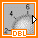

Objects on the block diagram include terminals and nodes. You build block diagrams by connecting the objects with wires. The color and symbol of each terminal indicate the data type of the corresponding control or indicator. Constants are terminals on the block diagram that supply fixed data values to the block diagram.
Front panel objects appear as terminals on the block diagram. Double-click a block diagram terminal to highlight the corresponding control or indicator on the front panel.
Terminals are entry and exit ports that exchange information between the front panel and block diagram. Data values you enter into the front panel controls enter the block diagram through the control terminals. During execution, the output data values flow to the indicator terminals, where they exit the block diagram, reenter the front panel, and appear in front panel indicators.
LabVIEW has control and indicator terminals, node terminals, constants, and specialized terminals on structures. You use wires to connect terminals and pass data to other terminals. Right-click a block diagram object and select Visible Items�Terminals from the shortcut menu to view the terminals. Right-click the object and select Visible Items�Terminals again to hide the terminals. This shortcut menu item is not available for expandable VIs and functions.
You can configure front panel controls or indicators to appear as icon or data type terminals on the block diagram. By default, front panel objects appear as icon terminals. For example, a knob icon terminal, shown as follows, represents a knob control on the front panel.

The DBL at the bottom of the terminal represents a data type of double-precision, floating-point numeric. A DBL terminal, shown as follows, represents a double-precision, floating-point numeric control.
Right-click a terminal and remove the checkmark next to the View As Icon shortcut menu item to display the data type for the terminal. Use icon terminals to display the types of front panel objects on the block diagram, in addition to the data types of the front panel objects. Use data type terminals to conserve space on the block diagram.
 |
Note��Icon terminals are larger than data type terminals, so you might unintentionally obscure other block diagram objects when you convert a data type terminal to an icon terminal. |
Control terminals have a thicker border than indicator terminals. Also, arrows indicate whether the terminal is a control or an indicator. An arrow appears on the right if the terminal is a control, and an arrow appears on the left if the terminal is an indicator.
The following table shows the symbols and uses for the different types of control and indicator terminals.
The color and symbol of each terminal indicate the data type of the corresponding control or indicator. Many data types have a corresponding set of functions that can manipulate the data, such as the String functions on the String palette that correspond to the string data type.
Refer to Numeric Data Types for more information about using numeric data types.
| Control | Indicator | Data Type | Use | Default Values |
|---|---|---|---|---|
 |
Single-precision, floating-point numeric | Saves memory and does not overflow the range of the numbers. | 0.0 | |
|
Double-precision, floating-point numeric | Is the default format for numeric objects. | 0.0 | |
| Extended-precision, floating-point numeric | Performs differently depending on the platform. Use only when necessary. | 0.0 | ||
 |
Complex single-precision, floating-point numeric | Same as single-precision, floating-point, with a real and an imaginary part. | 0.0 + 0.0i | |
 |
Complex double-precision, floating-point numeric | Same as double-precision, floating-point, with a real and an imaginary part. | 0.0 + 0.0i | |
| Complex extended-precision, floating-point numeric | Same as extended-precision, floating-point, with a real and an imaginary part. | 0.0 + 0.0i | ||
|
|
|
Fixed-point numeric | Stores values that fall within a user-defined range. This data type is useful when you do not need the dynamic range of floating-point representation or when you want to save resources when working with a target on which floating-point arithmetic is expensive in terms of FPGA resource usage, such as an FPGA target. | 0.0 |
| 8-bit signed integer numeric | Represents whole numbers and can be positive or negative. | 0 | ||
 |
16-bit signed integer numeric | Same as above. | 0 | |
 |
 |
32-bit signed integer numeric | Same as above. | 0 |
 |
 |
64-bit signed integer numeric | Same as above. | 0 |
| 8-bit unsigned integer numeric | Represents only non-negative integers and has a larger range of positive numbers than signed integers because the number of bits is the same for both representations. | 0 | ||
 |
16-bit unsigned integer numeric | Same as above. | 0 | |
| 32-bit unsigned integer numeric | Same as above. | 0 | ||
 |
 |
64-bit unsigned integer numeric | Same as above. | 0 |
| <64.64>-bit time stamp | Stores absolute time with high precision. | 12:00:00.000�AM 1/1/1904 (Universal�Time) | ||
| Enumerated type | Gives users a list of items from which to select. | � | ||
| Boolean | Stores Boolean (TRUE/FALSE) values. | FALSE | ||
 |
 |
String | Provides a platform-independent format for information and data, which you can use to create simple text messages, pass and store numeric data, and so on. | empty string |
| Array | Encloses the data type of its elements in square brackets and takes the color of that data type. As you add dimensions to the array, the brackets become thicker. | � | ||
|
|
|
A matrix of complex elements. | The wire pattern differs from that of an array of the same data type. | � |
|
|
|
A matrix of real elements. | The wire pattern differs from that of an array of the same data type. | � |
   |
   |
Cluster | Encloses several data types. Cluster data types appear brown if all elements in the cluster are numeric or pink if any elements in the cluster are of non-numeric types. Error code clusters appear dark yellow, while LabVIEW class clusters are crimson by default or teal green for Report Generation VIs. | � |
 |
Path | Stores the location of a file or directory using the standard syntax for the platform you are using. | empty path | |
 |
Dynamic | (Express VIs) Includes data associated with a signal and the attributes that provide information about the signal, such as the name of the signal or the date and time the data was acquired. | � | |
| Waveform | Carries the data, start time, and  t of a waveform. t of a waveform. |
� | ||
 |
Digital waveform | Carries start time, x, the digital data, and any attributes of a digital waveform. |
� | |
| Digital | Encloses data associated with digital signals. | � | ||
| Reference number (refnum) | Acts as a unique identifier for an object, such as a file, device, or network connection. | � | ||
| Variant | Includes the control or indicator name, the data type information, and the data itself. | � | ||
| I/O name | Passes resources you configure to I/O VIs to communicate with an instrument or a measurement device. | � | ||
| Picture | Includes a set of drawing instructions for displaying pictures that can contain lines, circles, text, and other types of graphic shapes. | � |
Select consistent and simple data types to optimize memory usage.
Undefined or unexpected data invalidate all subsequent operations. Floating-point operations return the following two symbolic values that indicate faulty computations or meaningless results:
LabVIEW does not check for overflow or underflow conditions on integer values.
Overflow and underflow for floating-point numbers is in accordance with IEEE 754, Standard for Floating-Point Arithmetic.
Floating-point operations propagate NaN and Inf reliably. However, integers and fixed-point numbers do not support symbolic numeric values. When you explicitly or implicitly convert +Inf to an integer or fixed-point number, the value becomes the largest value for that data type. For example, converting +Inf to a 16-bit signed integer produces the value 32,767, the largest possible value for a 16-bit signed integer. LabVIEW converts �Inf to the smallest value for that data type.
When you explicitly or implicitly convert NaN to an integer or a fixed-point value, the value becomes the largest value for that data type.
Before you convert data to integer or fixed-point data types, use the Probe tool to check intermediate floating-point values for validity. Check for NaN programmatically by wiring the Comparison function Not A Number/Path/Refnum? to the value you suspect is invalid. You also can use the In Range and Coerce function to keep values within a range you specify.
|
Note�� (FPGA Module) The bit pattern of NaN outputs on the FPGA may differ from outputs on the development computer. |
Constants are terminals on the block diagram that supply fixed data values to the block diagram. Universal constants are constants with fixed values, such as pi (π) and infinity (∞). User-defined constants are constants you define and edit before you run a VI.
Label a constant by right-clicking the constant and selecting Visible Items�Label from the shortcut menu. Universal constants have predetermined values for their labels that you can edit by using the Operating tool or the Labeling tool.
Most constants are located at the bottom or top of their palettes.
Use universal constants for mathematical computations and formatting strings or paths. LabVIEW includes the following types of universal constants:
The Functions palette includes constants organized by type, such as Boolean, numeric, ring, enumerated type, color box, string, array, cluster, and path constants.
Create a user-defined constant by right-clicking an input terminal of a VI or function and selecting Create�Constant from the shortcut menu.
You cannot change the value of user-defined constants when the VI is running.
You also can create a constant by dragging a front panel control to the block diagram. LabVIEW creates a constant that contains the value of the front panel control at the time you dragged it to the block diagram. The front panel control remains on the front panel. Changing the value of the control does not affect the constant value and vice versa.
Use the Operating or Labeling tool to click the constant and edit its value. If automatic tool selection is enabled, double-click the constant to switch to the Labeling tool and edit the value.
LabVIEW uses constant folding and loop invariants to optimize the performance of VIs.
|
Note��If you enable debugging, LabVIEW does not use constant folding for structures. |
You can configure LabVIEW to display constant folding and loop invariant hash marks on the block diagram by selecting Tools�Options�Block Diagram and configuring the Hash Marks options in the Block Diagram page.
Nodes are objects on the block diagram that have inputs and/or outputs and perform operations when a VI runs. They are analogous to statements, operators, functions, and subroutines in text-based programming languages. LabVIEW includes the following types of nodes:
Polymorphic VIs and functions can adjust to input data of different data types. Most LabVIEW structures are polymorphic, as are some VIs and functions.
Functions are polymorphic to varying degrees�none, some, or all of their inputs can be polymorphic. Some function inputs accept numeric values or Boolean values. Some accept numeric values or strings. Some accept not only scalar numeric values, but also arrays of numeric values, clusters of numeric values, arrays of clusters of numeric values, and so on. Some accept only one-dimensional arrays, although the array elements can be of any type. Some functions accept all types of data, including complex numeric values.